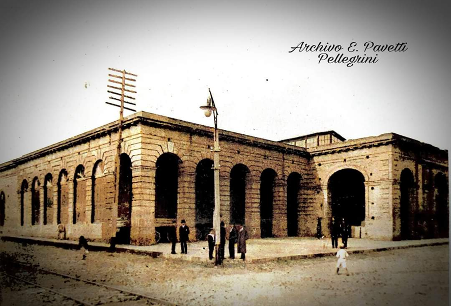

Denominación actual Sub Secretaría de Estado de Tribulación
Otras denominaciones: Estado Paraguayo-Ministerio de Hacienda
Aspectos Históricos El barrio la Catedral es uno de los más antiguos y principales barrios de la ciudad de Asunción, ubicado dentro del Centro Histórico de esta ciudad. Durante el Gobierno del Presidente Don Carlos Antonio López, en el año 1849, bajo su orden, se realizó un Registro de Propiedades Urbanas y Catastro edilicio, y concluyó con la apertura y arreglos de calles fijando una nomenclatura a cada una y para esta misma época, se concluyó siete murallas grandes de cal y piedra en el Puerto. Prosiguiendo su obra, niveló calles, formando rampas de piedras, construyendo calzadas firmes y transitables, "dando a las calles dirección y figura más regular". A finales del año 1850 e inicios del siglo XX, siempre durante su gobierno, surge la época más floreciente en cuanto a las construcciones se refiere, con la venida de inmigrantes europeos, todos profesionales en diferentes áreas, quienes aportaron sus conocimientos en la construcción de viviendas, edificios, sea en la capital Asunción como en ciudades importantes en el interior del país.
Aún hoy día se observa en el Centro Histórico de Asunción, edificios emblemáticos como ser: Palacio de López, Palacio Benigno López, Oratorio de la Virgen Nuestra Señora de la Asunción y Panteón Nacional de los Héroes, entre otros. También algunos edificios que quedaron sin concluir, como es el caso del Edificio "Teatro de López".
El Presidente Don Carlos Antonio López pretendía que sea un Teatro de Ópera. La planta baja fue diseñada como una platea, es por eso, que se solicitó al Arq. Alessandro Ravizza (italiano) para su diseño y construcción, inspirado en Alla Scala de Milán. Esta obra, significó sin duda alguna uno de los máximos esfuerzos del Gobierno, que correspondería en este caso a su hijo, el Mariscal Francisco Solano López.
Diversos testimonios documentales demuestran que, Alessandro Ravizza dedicó a este edificio y al Oratorio de la Asunción sus mejores esfuerzos.
El Historiador Estrada, no vaciló en afirmar que: "el plano revela que el Arquitecto que lo dirigía era un artista" (Estrada Santiago de, La Asunción del Paraguay, Revista argentina. Tomo 5, Buenos Aires, año 1869). Otro Historiador de apellido Carrasco; se hace eco de la noticia, de que el plano estaba inspirado en la Scala de Milán y opina que, una vez terminado, hubiera sido ..."el más hermoso y amplio no ya del Río de la Plata, sino de la América toda" (Carrasco Gabriel, Cartas de viaje por el Paraguay. Ed. J. Peuser. Buenos Aires, año1889).
Aparentemente, en el año 1936 el Ingeniero Paprosky, verificó la coincidencia con el trazado de la Scala de Milán y se ofreció a concluirlo, pero, la cuantiosa inversión que ello significaría desalentó la empresa. El carácter ciclópeo del edificio y los enormes muros de ladrillos, hicieron que se optase por efectuar un nuevo teatro en que "no obstante de ser de proporciones notables, resulta más barato que la terminación del anterior".
Es así, que, en la post guerra, en el año 1886 se inicia la construcción del Teatro Municipal. El edificio proyectado para Teatro de Ópera, fue convertido en oficinas públicas.
En la década de 1970, se realizó la ampliación de la segunda planta (planta alta) respetando la arquitectura del edificio, pero con otros fines: usos estatales, hasta el día de hoy.
Aspectos Formales: Estilo Neoclásico.
Descripción Formal: Desde el punto de vista de la tecnología aplicada: Se observa un patrón edilicio que se caracteriza por la transición hacia el Neoclasicismo y Ecléctico y se deja de lado la tecnología constructiva colonial. Se introducen nuevos materiales nacionales (perfiles de hierro) e importados (mármol etc.) también se inicia el concepto de Arquitectura de Fachada y Arquitectura monumental. El Neoclasicismo se convierte en una imitación de todo lo europeo, sea en el área constructiva como decoraciones exteriores e interiores.
Tipología: Planta centralizada exenta de linderos Descripción: El edificio se halla implantado en amplio terreno que ocupa toda la manzana, levemente elevado con respecto a la calle y sobre línea municipal (calle Iturbe) y sobre la calle Yegros cuenta con un pequeño jardín con murallas bajas y rejas de hierro fundido de sencillo diseño, que lo separa de la línea municipal o vereda. Éstas se construyeron cuando se realizó la refacción y ampliación edilicia para cumplir con otros fines: Oficinas del Estado (año 1970). Las otras fachadas también se hallan construidas sobre límite municipal o vereda.
Para su construcción se utilizaron materiales propios del país y algunos importados. Se pueden citar: Piedras traídas del interior de Emboscada y Altos para los cimientos, ladrillos cerámicos de las olerías cercanas para la mampostería que lleva revoques de tipo almohadillado en el frente de la fachada principal, las aberturas son de madera, consisten en puertas bien macizas con relieves y las ventanas vidriadas y con rejas de hierro fundido y decorados. Los pisos del acceso principal y de las escaleras interiores son de granito y mosaicos calcáreos, mientras que las demás áreas tienen baldosas calcáreas. El techo o cubierta está conformado por chapas acanaladas estructura de madera y se observa el cielorraso de yeso, así también bovedillas.
Bibliografia Gutiérrez Ramón Arq. Evolución Urbanística y Arquitectónica del Paraguay-Año 1537-1911. Ediciones Comuneros-Asunción Paraguay. (Páginas consultadas 188 y 224). Archivo del Ministerio de Hacienda-Secretaría de Estado de Tributación. Secretaría Nacional de Cultura(SNC) Dirección General de Patrimonio Cultural- Dirección de Registro de Patrimonio-Departamento de Registro de Patrimonio Cultural Municipalidad de Asunción-Dirección General de Desarrollo Urbano-Departamento de Patrimonio Cultural
Vinculación con otras fichas: Ficha Nacional de Identificación del Bien Cultural Inmueble-Dirección de Registro de Patrimonio-Dirección General de Patrimonio Cultural de la Secretaría Nacional de Cultura. Ficha de Inventario de edificios -Año 1990 Oficina Centro Histórico - Municipalidad de Asunción
Equipo de trabajo Catalogador Arq. Mirtha Ibarra C. Colaboradores Arq. Clarisse Insfrán E. Otros Colaboradores Func. Gustavo Barrios Ente componente Dirección de Registro de Patrimonio Fecha recolección de datos 01/07/2011 Operador Clarisse Insfrán Fecha de registro 14/05/2020